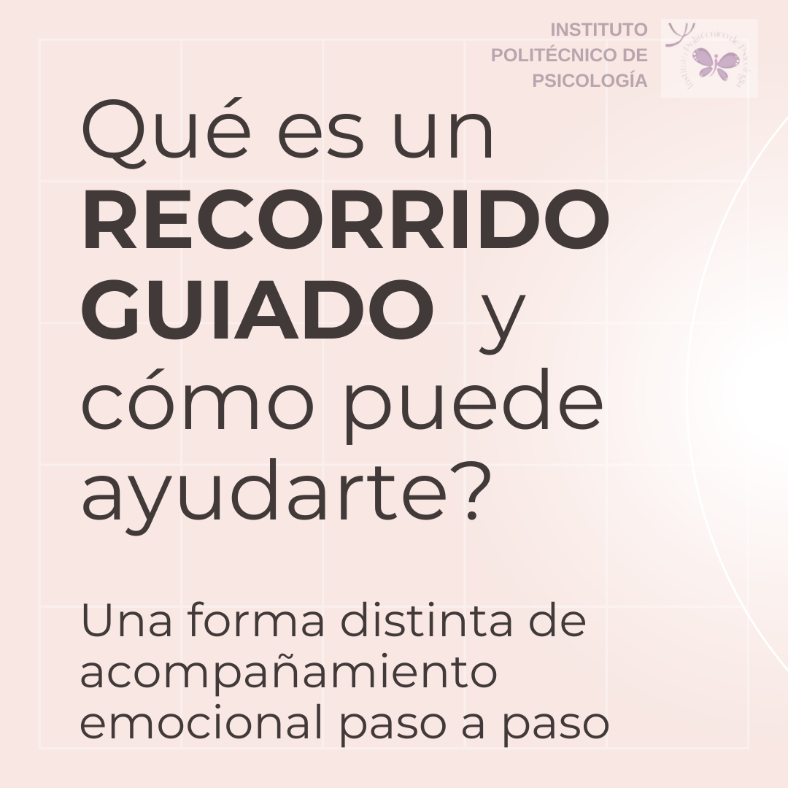
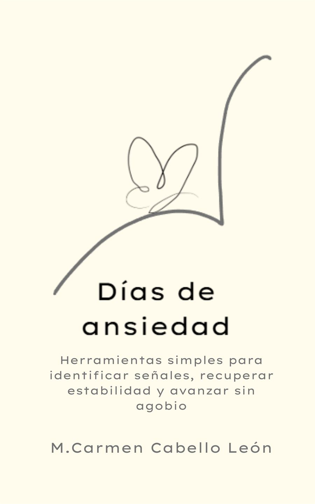

La ansiedad
Qué es, cómo se manifiesta y primeros pasos para comprenderla.
Soy M. Carmen Cabello León, Psicóloga General Sanitaria con especialidad en Neuropsicología (COPC nº 27366). Ofrezco terapia psicológica online para adolescentes, adultos y tercera edad, y creo formación y recursos digitales para profesionales y público general.

Santiago Ramón y Cajal denominó a un tipo especial de neuronas:
«Células de formas delicadas y elegantes, las misteriosas mariposas del alma, cuyo batir de alas quién sabe si esclarecerá algún día el secreto de la vida mental».
Ramón y Cajal, S. (1917). Recuerdos de mi vida. Editorial Nivola.
De esa imagen nace nuestro logotipo: las mariposas que representan esas neuronas.
El Instituto reúne la atención psicológica online individualizada y la creación de formación y materiales propios, pensados para acompañar a distintas personas y momentos.
Acompañamiento psicológico online, individualizado y adaptado a cada etapa de la vida: adolescentes, adultos y tercera edad. La evaluación neuropsicológica se deriva a Espai Salut (presencial).
Ver áreas de trabajo →Recorridos Guiados®, guías descargables, plantillas para profesionales y publicaciones propias, pensados para el aprendizaje autónomo.
Ver Recorridos Guiados® →Un proceso grabado, creado por M. Carmen Cabello León, pensado para acompañar paso a paso a quienes quieren empezar a comprender lo que sienten, a su ritmo y en privado, sin necesidad de sesiones en directo.
Incluye vídeos breves, materiales descargables y una orientación inicial y final. No sustituye un proceso de terapia: es un formato profesional en diferido, complementario.
Descubrir los recorridos disponibles
Guías y cuadernos prácticos, con explicaciones claras y pasos concretos, disponibles para descarga inmediata.

Un libro pensado para acompañar, no para explicar teorías: palabras y pasos sencillos para los días en los que todo cuesta un poco más de organizar.
Conocer el libroPsicología y neuropsicología explicadas con claridad, sin tecnicismos innecesarios.
Cuéntame brevemente qué necesitas y te oriento hacia la opción más adecuada: una sesión online, un Recorrido Guiado® o un recurso digital.